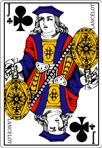

O truco mineiro é semelhante ao truco paulista com algumas variações.
Cada jogador recebe 3 cartas e em cada rodada joda uma carta. A maior carta daquela rodada leva uma perna daquela mão. Quem fizer duas pernas leva o tento daquela mão. Se acabarem as cartas o time que fez a primeira rodada leva o tento. Se a primeira melou "empatou" e o jogo continua empatado, ninguem leva tento.
A ordem de força das cartas é a seguinte (da mais forte à mais fraca): 
No truco mineiro as manílhas são fixas: as quatro primeiras cartas da lista acima. A partir da quinta carta com execão das quatro primeiras, as cartas de letra (ou número) iguais de naipes diferentes tem o mesmo poder.